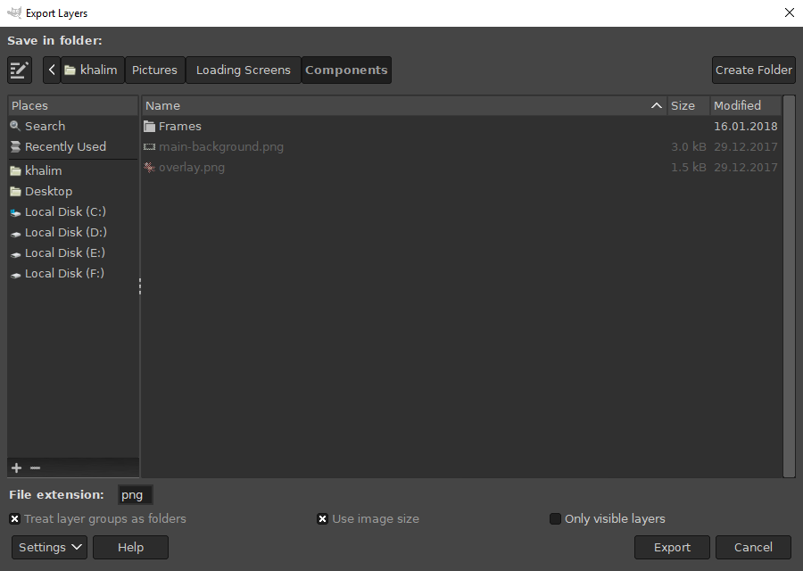

Usage
Basic Usage
Once you open an image in GIMP, select “File → Export Layers…”. A dialog appears, allowing you to specify output folder and a few basic settings:

To export layers, press the “Export” button. A dialog corresponding to the file format appears, allowing you to adjust export settings. Some file formats don’t have dialogs, while some file formats display the dialog for each layer (this can’t be prevented because the file format only allows an interactive export).
By default, layer names are used as filenames. To customize this behavior, see Customizing Layer Names.
Repeating Last Export
If you made changes to your image and want to export again with the same settings, you can do so with just one click by running “File → Export Layers (repeat)”.
Basic Settings
File extension
Type or choose your desired file extension in the “File extension” text entry. The dropdown list can help you choose the right file format/extension. For now, the dropdown list only contains a fixed list of file formats provided by GIMP and some recognized third-party plug-ins, but you can you can still enter a file extension not in the dropdown list in case you use a file format plug-in not recognized by Export Layers.
Treat layer groups as folders
If enabled, layers will be exported to subfolders corresponding to the layer groups. If disabled, all layers will be exported to the output folder on the same level and no subfolders will be created.
Only visible layers
If enabled, invisible layers will not be exported. Visible layers within invisible layer groups will also not be exported.
Use image size
If enabled, layers will be resized (not scaled) to the image size. This is useful if you want to keep the size of the image canvas and the layer position within the image. If layers are partially outside the image canvas, they will be cut off. If you want to export the entire layer, leave this setting disabled.
Managing Settings
After a successful export, your settings are preserved while GIMP is open. This means that if you close GIMP, the settings will be reset.
To save settings permanently, press the “Settings” button and choose “Save Settings”.
To reset settings to their default values, press the “Settings” button and choose “Reset Settings”.
More settings
If you need to further customize the export, see Advanced Usage.